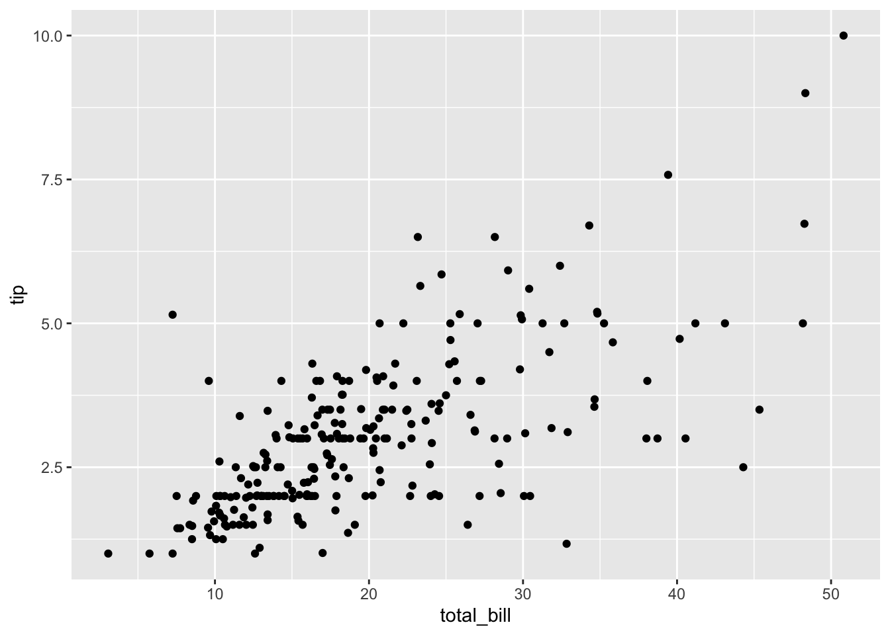
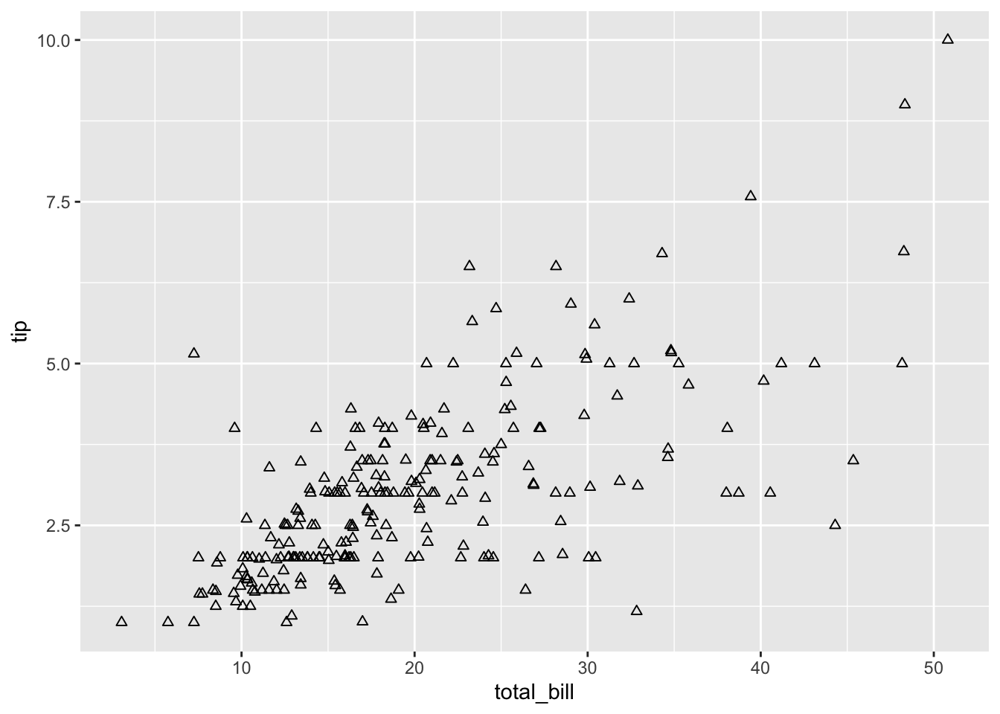
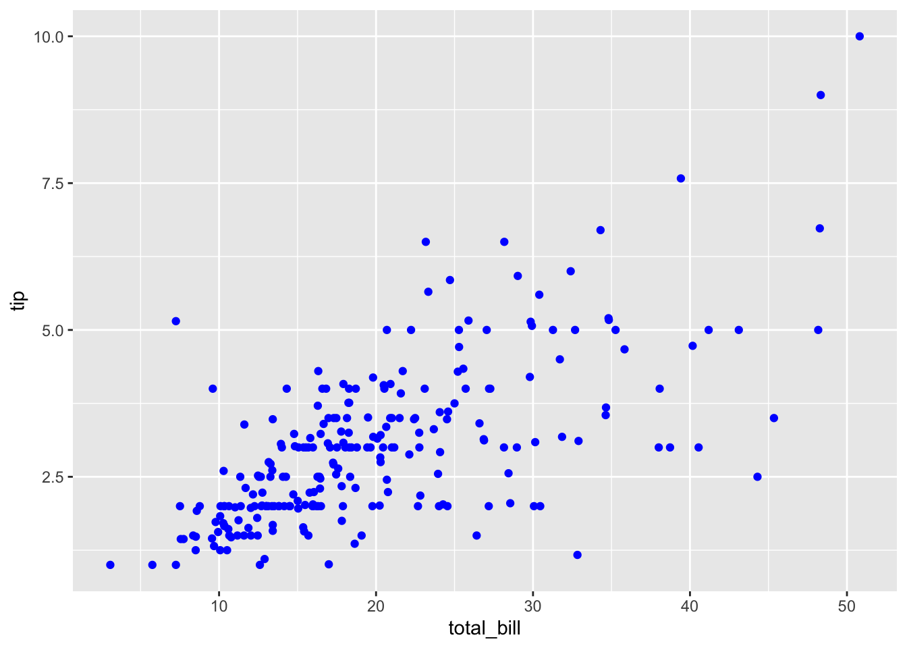
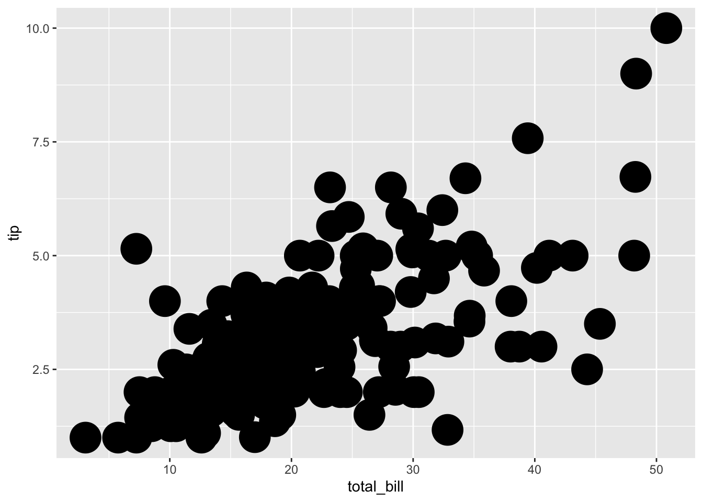
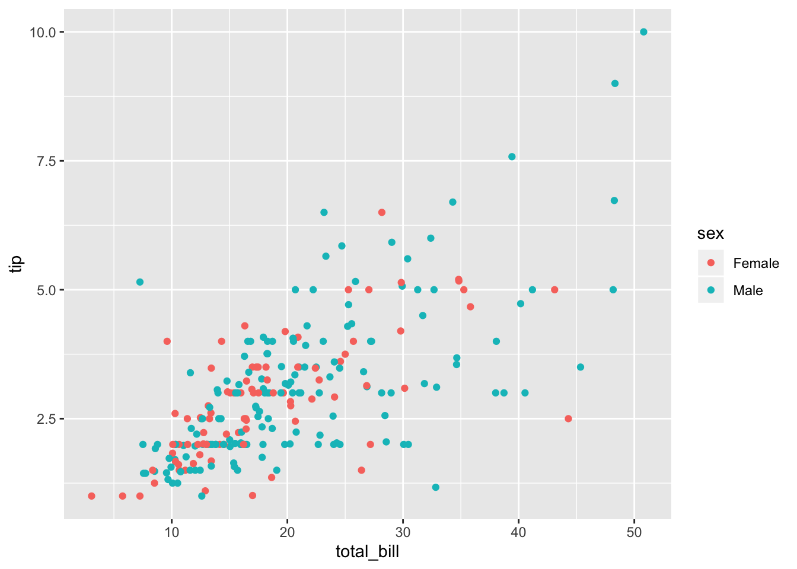
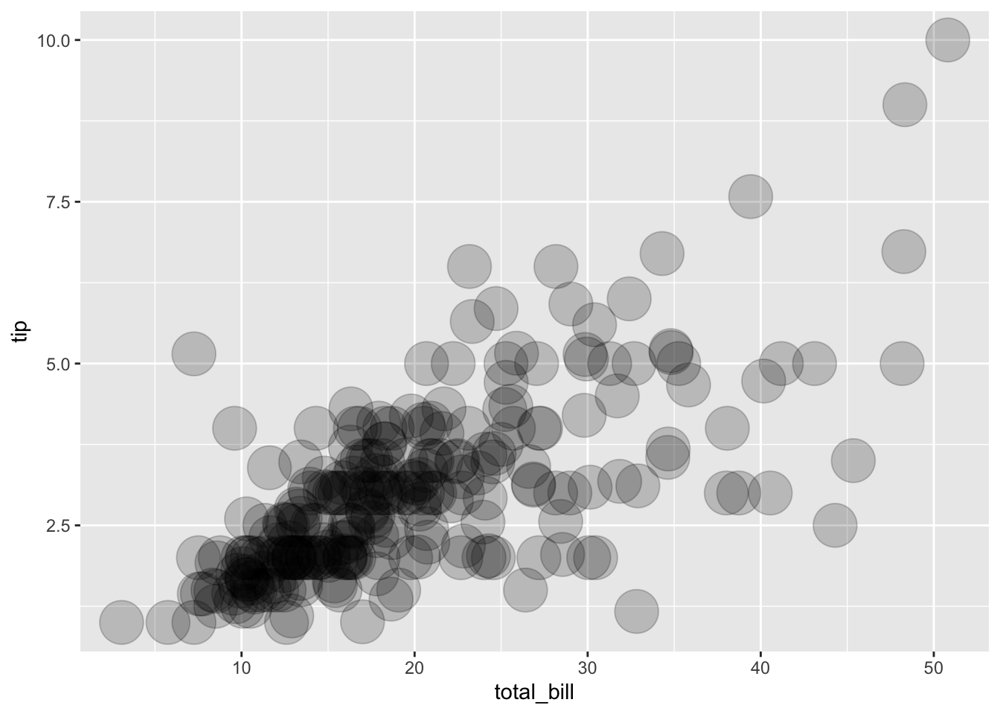

3 Chương 2: Biểu đồ điểm (scatter plot)
3.1 Dữ liệu dùng để vẽ biểu đồ
File tips.csv tại link: https://raw.githubusercontent.com/meongaongao/data/master/tips.csv
Dữ liệu trong file tips.csv có dạng bảng (data frame) gồm 244 dòng và 7 cột:
total_bill: tổng số tiền trên hoá đơntip: số tiền tip cho nhân viên phục vụsex: giới tínhsmoker: người thanh toán hoá đơn có hút thuốc hay khôngday: ngày trong tuần (thứ hai, thứ 3,…)time: thời gian trong ngày (“Diiner”, “Lunch”,…)size: số lượng khách của một hoá đơn
Tạo ra data frame có tên là tips
tips <- read.csv("https://raw.githubusercontent.com/meongaongao/data/master/tips.csv", header = TRUE)
head(tips, 10)## total_bill tip sex smoker day time size
## 1 16.99 1.01 Female No Sun Dinner 2
## 2 10.34 1.66 Male No Sun Dinner 3
## 3 21.01 3.50 Male No Sun Dinner 3
## 4 23.68 3.31 Male No Sun Dinner 2
## 5 24.59 3.61 Female No Sun Dinner 4
## 6 25.29 4.71 Male No Sun Dinner 4
## 7 8.77 2.00 Male No Sun Dinner 2
## 8 26.88 3.12 Male No Sun Dinner 4
## 9 15.04 1.96 Male No Sun Dinner 2
## 10 14.78 3.23 Male No Sun Dinner 23.2 Vẽ một biểu đồ đơn giản
Lớp geom_point() dùng để vẽ biểu đồ điểm (như tên của nó).

3.3 Thay đổi hình dạng điểm
Tham số: shape =. Tham số tác động lên điểm được đặt trong lớp geom_point(). R cung cấp 25 hình dạng được đánh số từ 1-25 và một số ký hiệu khác.

3.4 Thay đổi màu sắc điểm
Tham số: colour =.

Chương màu sắc sẽ được tách riêng vì có rất nhiều cách và các gói hỗ trợ.
3.5 Thay đổi kích thước điểm
Tham số: size =. Size mặc định là 2

3.6 Phân nhóm điểm
Phân nhóm bằng hình thức nào và theo cái gì. Ví dụ phân nhóm bằng màu sắc dựa trên giới tính.
Lưu ý, khi tham số nhận giá trị là một cột của data frame, tham số phải được đặt trong aes(). Ví dụ bên dưới geom_point(aes(colour = sex)). Nếu bạn chỉ viết geom_point(colour = sex) thì R sẽ không hiểu và báo lỗi.

3.7 Điều chỉnh độ xuyên thấu (opacity)
Tham số: alpha =, dùng khi có quá nhiều điểm chồng lên nhau và mình quan tâm đến mật độ điểm trên đồ thị.
Alpha có giá trị từ 0-1.
